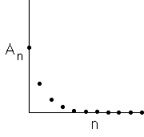

| Here is a summary of the data so far, and an extrapolation. |
| n | area of a triangle |
number of triangles | An |
| 0 | (√3)/12 |
1 | A0 = (√3)/12 |
| 1 | ((√3)/12)⋅(1/9) | 4 |
A1 = ((√3)/12)⋅(4/9) |
| 2 | ((√3)/12)⋅(1/81) = ((√3)/12)⋅(1/9)2 |
16 = 42 | A2 = ((√3)/12)⋅(16/81) =
((√3)/12)⋅(4/9)2 |
| ... | ... | ... | ... |
| n | ((√3)/12)⋅(1/9)n | 4n |
An = ((√3)/12)⋅(4/9)n |
|
| Here is a graph of An vs n |
|  |